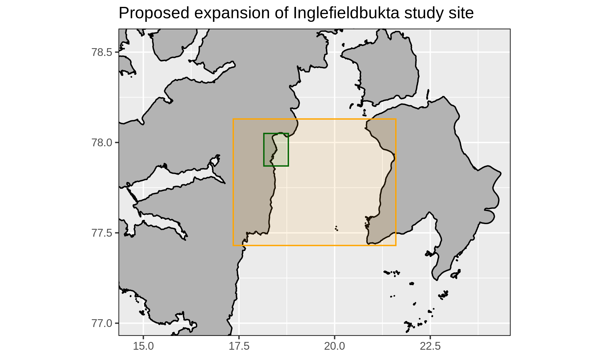

FACE-IT WP1 Summary: 2021
Robert Schlegel & Jean-Pierre Gattuso
2021-10-04
Last updated: 2022-09-23
Checks: 7 0
Knit directory: WP1/
This reproducible R Markdown analysis was created with workflowr (version 1.7.0). The Checks tab describes the reproducibility checks that were applied when the results were created. The Past versions tab lists the development history.
Great! Since the R Markdown file has been committed to the Git repository, you know the exact version of the code that produced these results.
Great job! The global environment was empty. Objects defined in the global environment can affect the analysis in your R Markdown file in unknown ways. For reproduciblity it’s best to always run the code in an empty environment.
The command set.seed(20210216) was run prior to running
the code in the R Markdown file. Setting a seed ensures that any results
that rely on randomness, e.g. subsampling or permutations, are
reproducible.
Great job! Recording the operating system, R version, and package versions is critical for reproducibility.
Nice! There were no cached chunks for this analysis, so you can be confident that you successfully produced the results during this run.
Great job! Using relative paths to the files within your workflowr project makes it easier to run your code on other machines.
Great! You are using Git for version control. Tracking code development and connecting the code version to the results is critical for reproducibility.
The results in this page were generated with repository version edd4849. See the Past versions tab to see a history of the changes made to the R Markdown and HTML files.
Note that you need to be careful to ensure that all relevant files for
the analysis have been committed to Git prior to generating the results
(you can use wflow_publish or
wflow_git_commit). workflowr only checks the R Markdown
file, but you know if there are other scripts or data files that it
depends on. Below is the status of the Git repository when the results
were generated:
Ignored files:
Ignored: .Rhistory
Ignored: .Rproj.user/
Ignored: code/ny-alesund_cc_pf_rws.R
Ignored: data/MUR/
Ignored: data/analyses/clean_all.RData
Ignored: data/analyses/ice_4km_proc.RData
Ignored: data/full_data/
Ignored: data/model/
Ignored: data/pg_data/
Ignored: data/restricted/
Ignored: data/sst_CCI_sval.RData
Ignored: data/sst_CCI_trom.RData
Ignored: data/sst_gland.RData
Ignored: data/sst_sval.RData
Ignored: data/sst_trom.RData
Ignored: metadata/pangaea_parameters.tab
Ignored: metadata/pg_EU_ref_meta.csv
Ignored: poster/SSC_2021_landscape_files/paged-0.15/
Ignored: shiny/dataAccess/full_data
Ignored: shiny/kongCTD/data/data_base.Rds
Ignored: shiny/test_data/
Note that any generated files, e.g. HTML, png, CSS, etc., are not included in this status report because it is ok for generated content to have uncommitted changes.
These are the previous versions of the repository in which changes were
made to the R Markdown (analysis/2021_summary.Rmd) and HTML
(docs/2021_summary.html) files. If you’ve configured a
remote Git repository (see ?wflow_git_remote), click on the
hyperlinks in the table below to view the files as they were in that
past version.
| File | Version | Author | Date | Message |
|---|---|---|---|---|
| html | 8a8fd0b | Robert | 2022-05-27 | Build site. |
| html | b32f47e | robwschlegel | 2022-04-21 | Build site. |
| html | 1da6285 | Robert | 2021-12-14 | Build site. |
| html | 860f5d3 | Robert | 2021-12-10 | Build site. |
| html | 2725466 | Robert | 2021-12-10 | Merge |
| html | 64a5252 | Robert | 2021-12-10 | Build site. |
| html | 807675e | robwschlegel | 2021-12-06 | Build site. |
| html | 104acbc | Robert | 2021-12-03 | Build site. |
| html | 26ce5f6 | robwschlegel | 2021-12-01 | Build site. |
| html | 1e379a2 | robwschlegel | 2021-11-25 | Build site. |
| html | 79b2932 | Robert | 2021-11-10 | Build site. |
| html | 7caf87b | Robert | 2021-11-09 | Build site. |
| html | 49b83b1 | robwschlegel | 2021-11-01 | Build site. |
| html | ca5002a | robwschlegel | 2021-10-04 | Build site. |
| html | 3e117d4 | Robert | 2021-09-30 | Build site. |
| Rmd | b3cfda8 | Robert | 2021-09-30 | Re-built site. |
| html | ad77318 | Robert | 2021-09-30 | Build site. |
| Rmd | 72feb91 | Robert | 2021-09-30 | Rough plots for analysis talk |
| Rmd | 657b15d | Robert | 2021-09-29 | More work towards the analysis talk |
| html | a010b46 | Robert | 2021-09-28 | Workflowr issues |
| Rmd | 31b16a4 | Robert | 2021-09-28 | Rearrange talks to now be part of the WP1 website. Full version of summary talk complete. |
| html | 31b16a4 | Robert | 2021-09-28 | Rearrange talks to now be part of the WP1 website. Full version of summary talk complete. |
| html | 0f93d06 | Robert | 2021-09-28 | Build site. |
| html | 6f949b1 | Robert | 2021-09-28 | Build site. |
| Rmd | 97cfbfa | Robert | 2021-09-28 | Re-built site. |
| html | 5786d9e | Robert | 2021-09-28 | Build site. |
| html | 72675ee | Robert | 2021-09-28 | Build site. |
| Rmd | d74f765 | Robert | 2021-09-28 | Re-built site. |
Structure

- Lead: Jean-Pierre Gattuso

- Data Scientist: Robert Schlegel
- Identify and analyse major drivers of change for fjord and adjacent socioecological systems
- Coolect, manage, and disseminate data and analyses both within and outside the consortium
- Key drivers identified in WP1 form the operative base for all WPs
Deliverables
Key drivers (D1.1: 6 months)
| Category | Drivers |
|---|---|
| Cryosphere | Coastal ice, fast ice, glacier, permafrost, sea ice, snow cover |
| Physical | Bathymetry, current, evaporation, heatflux, Kd, MLD, precipitation, river discharge, salinity, SLP, air/sea temperature, sedimentation rate, suspended matter, wind |
| Physical | Calcium carbonate (CaCO3), DIC, DOC, DON, O2, nutrients, pCO2, pH, total alkalinity |
| Biology | Calcification, nitrogen fixation, photosynthesis, primary production, respiration, species presence/abundance |
| Social | Fish/game landings, local and national resource management, national statistics, tourist arrivals/vessels |
Meta-database (D1.2: 12 months)
Other deliverables
- Data management plan (D8.1: 6 months)
- Created FACE-IT GitHub repository
- All WP1 progress available on public website
Cross-package interactions
- Ny-Ålesund, Kongsfjorden, Svalbard (July - August, 2021)
- Participated in fieldwork for WP3
- Worked adjacent to WP2
Data issues
Complex data
- What to do with complex data types?
- e.g. Seabird (animal) database and geospatial data like glacier fronts
- Who are the contacts in each WP with an opinion on this issue?
Effective data collection and dissemination
- Who has other people working with data collection/production?
- WP1 is tasked with archiving the FACE-IT data on PANGAEA
- This applies to all data in FACE-IT publications
- WP1 is of service to all of FACE-IT but we need to be informed
- Ensure that Milestones are being reached
Inglefieldbukta

- Expand the small study area of Inglefieldbukta to the much larger
semi-open fjord of Storfjorden
- WP1 has no issues with this, are there any objections?
What’s next?
- Review article: Drivers of change in FACE-IT study sites (D1.3: 24 months)
- Follow up meeting with site and social science coordinators
Summary
- Who has use for the data collected and processed by WP1?
- How would they like to access them?
- What format(s) is most useful? (e.g. .csv, .Rdata, .nc)
- Who has their own data collection efforts?
R version 4.2.1 (2022-06-23)
Platform: x86_64-pc-linux-gnu (64-bit)
Running under: Ubuntu 18.04.6 LTS
Matrix products: default
BLAS: /usr/lib/x86_64-linux-gnu/blas/libblas.so.3.7.1
LAPACK: /usr/lib/x86_64-linux-gnu/lapack/liblapack.so.3.7.1
locale:
[1] LC_CTYPE=en_GB.UTF-8 LC_NUMERIC=C
[3] LC_TIME=en_GB.UTF-8 LC_COLLATE=en_GB.UTF-8
[5] LC_MONETARY=en_GB.UTF-8 LC_MESSAGES=en_GB.UTF-8
[7] LC_PAPER=en_GB.UTF-8 LC_NAME=C
[9] LC_ADDRESS=C LC_TELEPHONE=C
[11] LC_MEASUREMENT=en_GB.UTF-8 LC_IDENTIFICATION=C
attached base packages:
[1] stats graphics grDevices utils datasets methods base
other attached packages:
[1] DT_0.24 kableExtra_1.3.4 forcats_0.5.2 stringr_1.4.1
[5] dplyr_1.0.9 purrr_0.3.4 readr_2.1.2 tidyr_1.2.0
[9] tibble_3.1.8 ggplot2_3.3.6.9000 tidyverse_1.3.2 workflowr_1.7.0
loaded via a namespace (and not attached):
[1] httr_1.4.4 sass_0.4.2 jsonlite_1.8.0
[4] viridisLite_0.4.1 modelr_0.1.9 bslib_0.4.0
[7] assertthat_0.2.1 getPass_0.2-2 highr_0.9
[10] googlesheets4_1.0.1 cellranger_1.1.0 yaml_2.3.5
[13] pillar_1.8.1 backports_1.4.1 glue_1.6.2
[16] digest_0.6.29 promises_1.2.0.1 rvest_1.0.3
[19] colorspace_2.0-3 htmltools_0.5.3 httpuv_1.6.5
[22] pkgconfig_2.0.3 broom_1.0.0 haven_2.5.1
[25] scales_1.2.1 webshot_0.5.3 processx_3.7.0
[28] svglite_2.1.0 whisker_0.4 later_1.3.0
[31] tzdb_0.3.0 git2r_0.30.1 googledrive_2.0.0
[34] generics_0.1.3 ellipsis_0.3.2 cachem_1.0.6
[37] withr_2.5.0 cli_3.3.0 magrittr_2.0.3
[40] crayon_1.5.1 readxl_1.4.1 evaluate_0.16
[43] ps_1.7.1 fs_1.5.2 fansi_1.0.3
[46] xml2_1.3.3 tools_4.2.1 hms_1.1.2
[49] gargle_1.2.0 lifecycle_1.0.1 munsell_0.5.0
[52] reprex_2.0.2 callr_3.7.2 compiler_4.2.1
[55] jquerylib_0.1.4 systemfonts_1.0.4 rlang_1.0.4
[58] grid_4.2.1 rstudioapi_0.14 htmlwidgets_1.5.4
[61] crosstalk_1.2.0 rmarkdown_2.16 gtable_0.3.0
[64] DBI_1.1.3 R6_2.5.1 lubridate_1.8.0
[67] knitr_1.40 fastmap_1.1.0 utf8_1.2.2
[70] rprojroot_2.0.3 stringi_1.7.8 Rcpp_1.0.9
[73] vctrs_0.4.1 dbplyr_2.2.1 tidyselect_1.1.2
[76] xfun_0.32